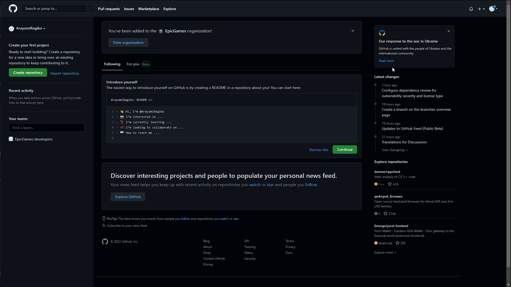

Git, GitHub и GitHub Pages
Первые шаги
- Система контроля версий — система, записывающая изменения в файл или набор файлов в течение времени и позволяющая вернуться позже к определённой версии.
Git — самая распространённая система для контроля версий. - GitHub — платформа для хостинга удалённых репозиториев.
- GitHub Pages — бесплатный хостинг от GitHub для публикации статических веб-сайтов прямо из репозиториев. С помощью него можно одной командой опубликовать в общий доступ сайт на MkDocs.
Перед дальнейшей работой надо:
SSH
Для упрощения работы с GitHub надо сгенерировать SSH-ключ и закрепить его за аккаунтом. Подробнее об SSH-ключе.
| Шаг | Описание | Скриншот |
|---|---|---|
| Генерация ключа | Ввести в командной строке ssh-keygen. После этого выйдут два запроса, на которые можно просто нажимать Enter:1. В первом он запросит название файла для ключа — по умолчанию он его назовёт id-rsa. 2. Во втором он предложит сделать дополнительный пароль для защиты ключа — по умолчанию пароль не будет задан |
|
| Переход в папку с ключом | Ввести cd .ssh. Если не менять название файла при создании — в папке .ssh должен лежать файл id-rsa.pub.Если поменять — надо ориентироваться на файл с расширением .pub |
|
| Чтение публичного ключа | Ввести cat id-rsa.pub (или cat [ваше-имя-файла].pub). Выделить и скопировать весь код, который появился в окне терминала |
|
| Сохранение публичного ключа в GitHub | В GitHub перейти в "Settings"→"SSH and GPG keys"→"New SSH key". Вставить, назвать (Например, "Home-PC") и сохранить ключ |
 |
{kind=link}
Cоздание репозитория
- Нажмите на кнопку New.
- В появившемся окне введите название репозитория.
- Нажмите Create repository.

После этого надо вернуться в командную строку и последовательно ввести команды:
| Команда | Описание |
|---|---|
git init |
Инициализировать систему контроля версий в папке сайта |
git add . |
Попросить Git отслеживать все файлы в папке по пути . |
git commit -m “git init" |
Создать первый коммит |
git branch -m main |
Создать главную (main) ветка |
git remote add origin git@github.com:[ИмяВашегоАккаунта]/[название-вашего-репозитория].git |
Привязать локальный репозиторий к удалённому в GitHub аккаунте |
git push -u origin main |
Отправить локальные данные в удалённый репозиторий |